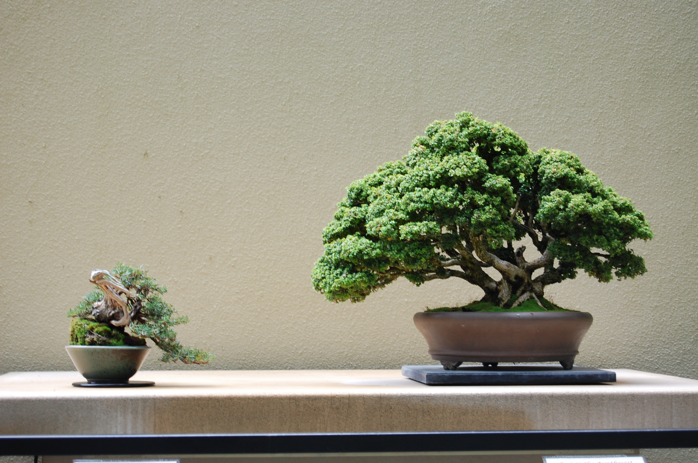
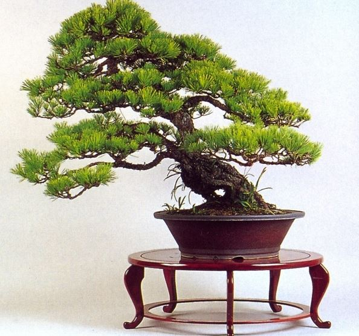
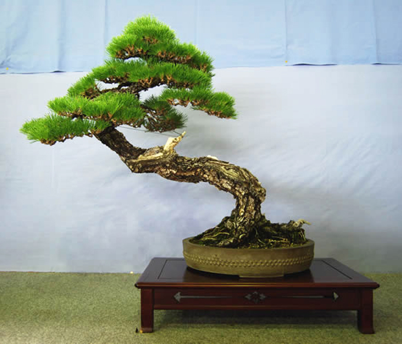
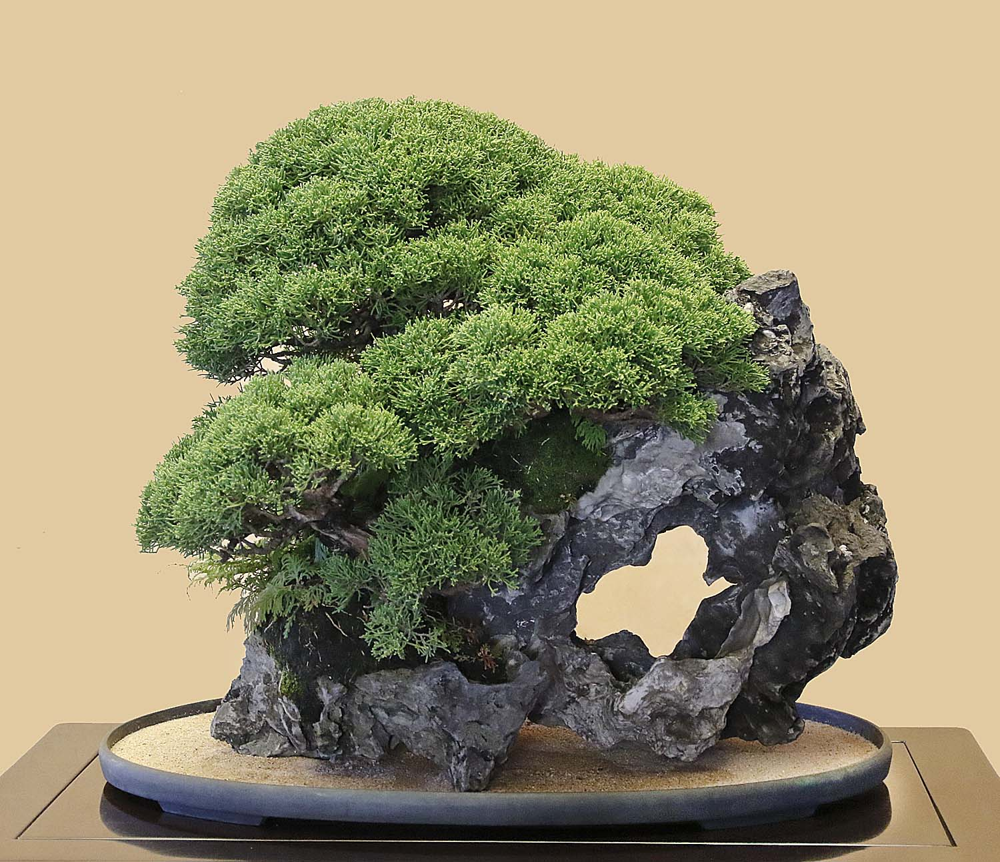
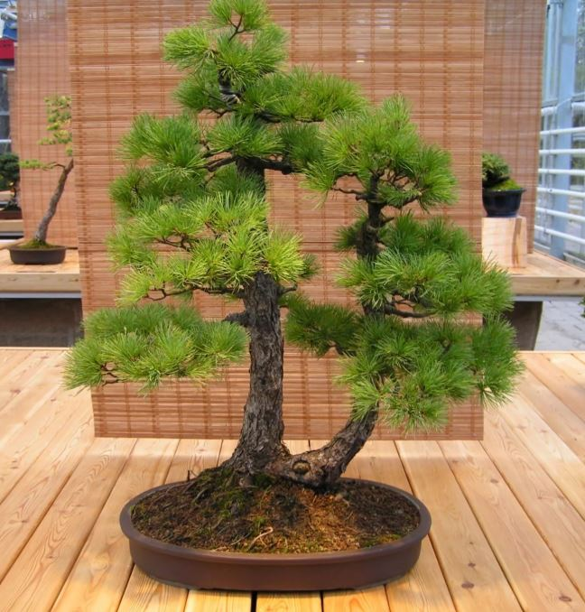
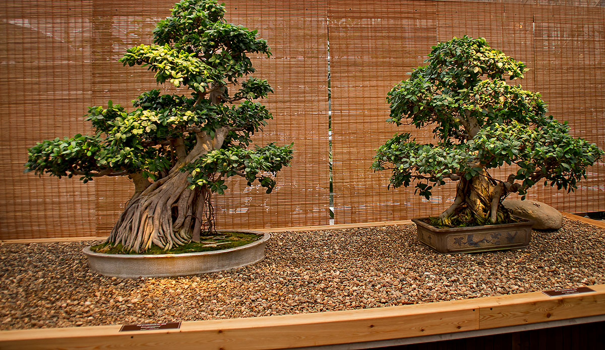
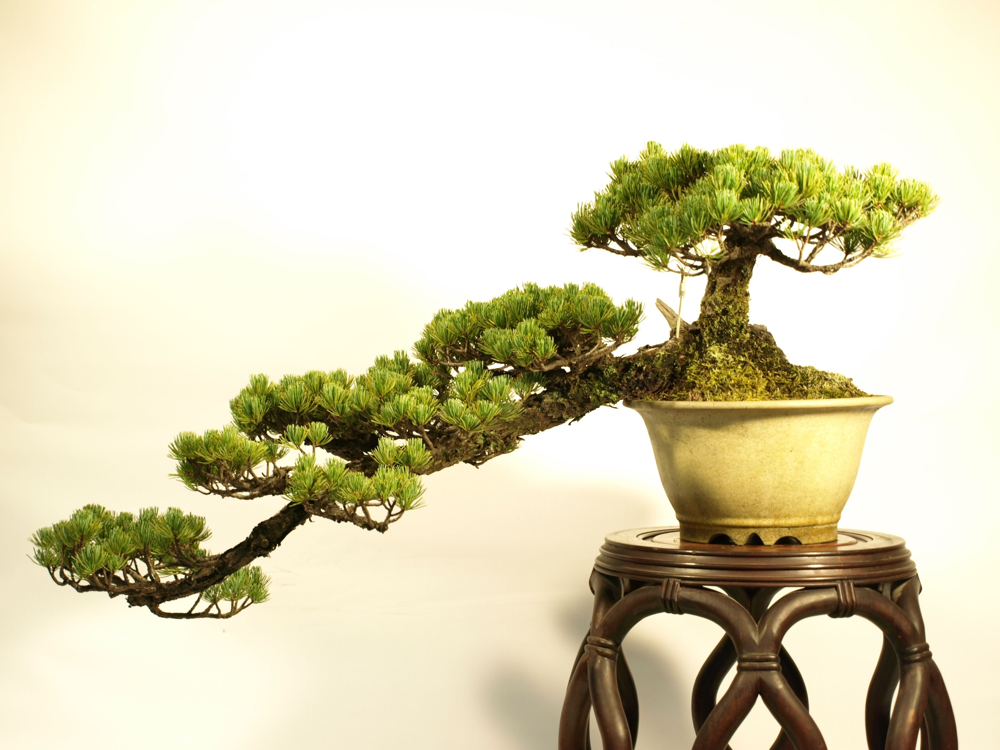

What is Bonsai: Forms and Growing Tips
Bonsai is the art of growing miniature trees. This achievement comes from China, which eventually managed to conquer the whole world. Growing mini-copies of deciduous and other crops is possible at home, so you can postpone the purchase of a finished plant. However, whatever the bonsai may be, it requires careful care.
What it is?
Not every bonsai can be called a bonsai. This technique has its characteristic features.
- A small tree should have a thickened trunk.
- It should have an organically formed natural crown.
- If the maximum height of the plant is two meters, then the miniature grows up to 20 cm.
- In eastern countries, it is customary to transplant mature trees into beautiful pots, in which the culture is for almost its entire life.
Despite the fact that everyone is used to considering bonsai an invention of Japan, this method of growing indoor crops originally appeared in China in 200 BC. e. It was called "punsai" or "tree in a bowl." Centuries later, the Japanese perfected the art. The reason was the impossibility of planting gardens on the adjacent plots and inside buildings. The Japanese passion, in contact with Buddhism and life values, united man and nature into a harmonious union.
"Выращивание маленьких деревьев требует немалой твердости духа и терпения. Интенсивность роста культуры постоянно контролируется обрезкой и прищипкой корневой системы, побегов и цветочных почек."
Varieties of forms
The centuries-old history of bonsai technology includes various styles of creating tiny plants. Therefore, before you start growing your own tree, you need to decide in which direction the culture will be formed. The choice of pot also depends on this. Cascading, hanging branches and slanting trees require heavy containers. Upright and externally rooted trees are planted in flat, stable pots. Consider the most popular styles.
-
Syakan is a tree with a slight slope to one side. It symbolizes the ability of a person to resist any difficulties, as trees resist the wind.
  -
Kabudati is a tree with two trunks that have a common base and root system. Over time, they acquire different thicknesses.
  -
Tekkan is an upright bonsai, somewhat similar to a scrub. The lower zone of the trunk is bare, allowing you to see a powerful superficial root system. As a rule, three main branches are left on the tree.
 -
Kengai is a strongly inclined tree, the branches of which are directed in one direction. Half of the trunk may be bare. The culture is grown in tall pots.

How to grow?
To grow bonsai with your own hands, you will need a set of special tools for the formation of the crown of culture and other activities.
- Concave shaped pliers for cutting wire and removing branches at the base of the trunk. It is important not to leave stumps, burrs and other protrusions.
- Convex wire cutters for removing protruding parts of a tree (roots, trunk parts). Thanks to the special shape of the instrument, the incisions heal quickly.
- Scissors for trimming thin roots.
- Curved tweezers for plucking buds and pine needles, removing dead plant parts.
"Ухаживать за бонсаем непросто. Такие культуры особенно требовательны к поливу и условиям выращивания."